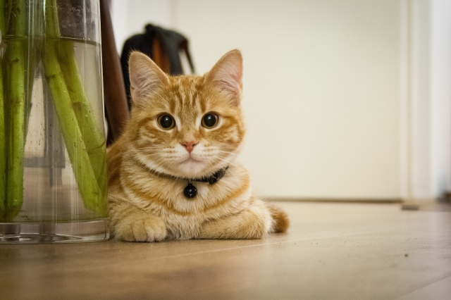

| ネコとは |
イヌと同じく愛玩用家畜とされていますが、飼育開始となったのはイヌより遅いです。
これはネズミの害が深刻でない限り有効性がなかったためです。
人類が穀物という食害を受けやすい財産を保有するようになってから、ネコの役割が確立したとされています。 |
| アンサー① |
食肉目（ ネコ ）科（ ネコ ）属に分類される動物です。 |
|
|
イエネコはリビアヤマネコが家畜化されたものに対する通称で、広義にはネコ科全般を指します。
リビアヤマネコは当初、ネズミを捕獲させる目的で飼われていました。
|
| アンサー② |
（ 内臓 ）を前後に移動することができるため、狭い場所でも通ることができます。 |
|
|
内臓を前後に移動させることで、身体の幅を自在に調節することが可能となっています。
|
| アンサー③ |
顔の大きさの割に（ 眼 ）が大きく、これがネコを可愛いと思わせる一因にもなっています。 |
|
|
前面に眼窩（がんか）が開いているため、正対視するのに大変有利です。
これはヒトと共通の特徴で、眼による感情表現が豊かであることも含め、ネコに親近感を抱く理由とされています。
|
| アンサー④ |
メスの妊娠期間は（ 65 ）日程度で、年3~4回の出産が可能です。 |
|
|
おおむね2～6匹程度の子を妊娠します。乳房は4対8個あるのが一般的とされています。
|
| アンサー⑤ |
（ 知能 ）は哺乳類の中でもトップクラスで、簡単な言葉を理解できるようになる個体もいます。 |
|
|
「ネコは頭が良い、イヌは賢い」という言葉がありますが、これは人間の都合からみた従順さだとされています。
|
| アンサー⑥ |
非常に優れた（ 平衡感覚 ）を持ち、柔軟性と瞬発力が極めて高い構造をしています。 |
|
|
ネコの体は非常に柔軟性が高く、頭の周り以外は体のほぼ全ての場所を自分で舐めることができます。
平衡感覚を司る三半規管の能力が優れており、正しく上下を判断した上で着地を行うことができます。
|